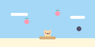
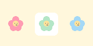

01 · アクション
うさぎのぴょんぴょん散歩
きのこをジャンプで飛び越えよう。
20個クリアで、お散歩大成功！
K1K2K3どれかを押してジャンプ
エンコーダー
上段 K4・K5・K6 ／ 下段 K1・K2・K3
文字は英数字に対応。ショートカットはCtrlキーを使います（主にWindows / Linux向け）。
設定はこのブラウザ内で編集します。ファイルの保存だけでは本体は変わりません。
未接続
USB接続はパソコン版Chrome / Edgeを使用してください。編集中の設定は、保存ボタンを押すまで本体に送信しません。
キーを選んで設定を始められます。
Ctrl+C・Ctrl+Aなどが文字だけになる場合は、下の修正版ファームへ更新してください。更新前に「本体から読み込む」→「設定をダウンロード」で設定を控えてください。サイトの再読み込みだけでは直りません。キーボード専用はV1.1、ゲーム入りはV2.3です。実機での修正確認は未完了です。
初回は1〜6・音量上下・ミュートです。液晶には各キーの設定番号が表示されます。実機でのUSB書き込み・電源再投入後の保持は未検証です。書き込み中はUSBを抜かないでください。
6つのキーが、ゲームのコントローラーに。
3つまとめて本体に入れて、好きなゲームを選べます。
きのこをジャンプで飛び越えよう。
20個クリアで、お散歩大成功！

02 · キャッチいちごをキャッチして、おやつの時間。
黒い石をよけながら20個集めよう。

03 · 記憶パズルお花が光る順番を覚えて、同じ順に。
ひとつずつ増えて、最後は8つ！
ゲーム入りファームをダウンロードして、BOOTモードの本体へコピー。
書き込み後は、キーボードのキー配置設定も引き続き使えます。
色が違うとき（v2.2）：初回は色確認画面になります。K1でRGB/BGR、K2で色反転を切り替え、REDが赤・GREENが緑・BLUEが青・WHITEが白・BLACKが黒になる組み合わせを選びます。K5で保存（SAVED表示）、K6で戻ります。後からはメニューでK4を押して調整できます。
本体で選ぶ： K1で前へ、K3で次へ、K2で決定。ゲーム中はK6でメニューに戻り、終了画面ではK2でもう一度。メニューでK6を押すとキーボードに戻ります。
キーボードからゲームへ： K4とK6を一緒に約1.2秒長押し。PCへ割り当て済みのキー入力も送られるため、入力先に注意してください。サイトから選ぶ場合は「USBで接続」後に各ゲームの開始ボタンを使えます。
本体と未接続です。ファームのダウンロードは接続なしでも使えます。
このUF2は現在のファームウェアを置き換えます。元のキー設定と同じ保存形式を使いますが、実機での設定保持・液晶表示・ゲーム操作・USB動作は未検証です。USBからゲームを選ぶ操作は起動中だけ有効で、電源を入れ直すと本体のメニューになります。